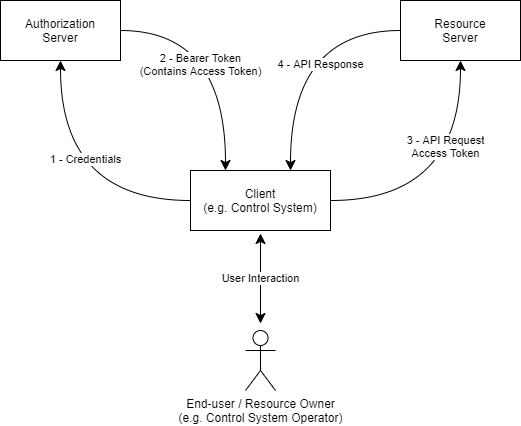

AMWA IS-10 NMOS Authorization Specification: Overview
(c) AMWA 2019, CC Attribution-NoDerivatives 4.0 International (CC BY-ND 4.0)
Documentation
The documents included in this directory provide additional details and recommendations for implementations of the defined API, and its consumers.
Familiarity with the JT-NM reference architecture is assumed, and further definitions of OAuth 2.0 concepts as they apply to NMOS are found in both the Definitions section and the OAuth 2.0 standard.
Use of Normative Language
The key words "MUST", "MUST NOT", "REQUIRED", "SHALL", "SHALL NOT", "SHOULD", "SHOULD NOT", "RECOMMENDED", "MAY", and "OPTIONAL" in this document are to be interpreted as described in RFC 2119.
Introduction
This document defines the mechanism for authorization of clients which need to access or modify resources held by an AMWA NMOS API. The specification requires the implementation of OAuth 2.0 as defined by various IETF RFCs, with additions made covering the topics of discovery, preferred OAuth grant types and the use of claims within JSON Web Tokens (JWTs).
Use of insecure communication (plain HTTP etc.) is forbidden within the scope of this document. Whilst this document is not concerned with the security of the connection used to carry out authorization or subsequently authorized interactions, for the authorization mechanisms described in this document to be effective the connection used MUST be encrypted.
Implementation of BCP-003-01 is a RECOMMENDED prerequisite to implementing this document.
OAuth RFCs
This specification builds upon the following IETF RFCs. Compliant Authorization Servers, Resource Servers and Clients are expected to implement the requirements (or a subset) as set out in each of these documents:
- RFC 6749 - The OAuth 2.0 Authorization Framework
- RFC 6750 - The OAuth 2.0 Authorization Framework: Bearer Token Usage
- RFC 6819 - OAuth 2.0 Threat Model and Security Considerations
- RFC 7009 - OAuth 2.0 Token Revocation
- RFC 7515 - JSON Web Signature (JWS)
- RFC 7517 - JSON Web Key (JWK)
- RFC 7519 - JSON Web Token (JWT)
- RFC 7523 - JSON Web Token (JWT) Profile for OAuth 2.0 Client Authentication and Authorization Grants
- RFC 7591 - OAuth 2.0 Dynamic Client Registration Protocol
- RFC 7636 - Proof Key for Code Exchange by OAuth Public Clients
- RFC 8252 - OAuth 2.0 for Native Apps
- RFC 8414 - OAuth 2.0 Authorization Server Metadata
- RFC 8628 - OAuth 2.0 Device Authorization Grant
- RFC 8725 - JWT Best Common Practices
- Draft - OAuth 2.0 for Browser-Based Apps https://datatracker.ietf.org/doc/draft-ietf-oauth-browser-based-apps
- Draft - OAuth 2.0 Security Best Practice https://datatracker.ietf.org/doc/draft-ietf-oauth-security-topics
- Draft - JWT profile for OAuth2 access tokens https://datatracker.ietf.org/doc/draft-ietf-oauth-access-token-jwt
It is intended that by using this common suite of RFCs, existing commercial or open source Authorization Servers can be used alongside NMOS APIs with minimal modifications.
Authorization Flow (Informative)
A simplified illustration of the authorization flow is shown below. The API client, in this case a broadcast control system, provides credentials to the Authorization Server, which verifies them. These credentials consist of information pertaining to the client itself, given by the Authorization Server upon successful registration, and to the user. The mechanism used to verify credentials is out of scope for this document, but may involve widely used authentication technologies such as a corporate Single Sign On, Kerberos or Microsoft Active Directory for example.
In its request, the client will also indicate what privileges it wants included in a token. If the Authorization Server concurs that a given client may be permitted the privileges requested, it will grant a Bearer Token containing an Access Token whose "claims" include the requested privileges.
The client uses the Access Token it has been issued with when it makes requests to protected resources on the Resource Server. The Resource Server then validates the token, using the public key of the Authorization Server. If the Resource Server finds that the token is valid for the protected resource to be accessed, it will allow the API request to proceed.

Tokens are signed using a long-lived private key held by the Authorization Server. The Authorization Server makes available its public key to Resource Servers, to allow them to validate tokens using that key.
Access Tokens are short-lived for security purposes. To prevent multiple authorization requests to the user, OAuth 2.0 supports the concept of Refresh Tokens. Refresh Tokens issued by the Authorization Server are much shorter-lived than the Authorization Server secret key, but longer-lived than the Access Token. This means that the client may readily employ the Access Token without needing to ask the end-user for their credentials, but allows system administrators the opportunity to revoke access to the protected resources by the client by refusing to issue a new Access Token when asked for a renewal.
OAuth Grants
Client Types (Informative)
RFC 6749 defines three different classes of OAuth 2.0 Client: * Web application - client credentials stored in a server. * User-agent-based application - client credentials stored in the user-agent (e.g browser). * Native application - client credentials stored in a native application (e.g broadcast control system).
It is important to understand what kind of client is being implemented, as this impacts on the OAuth 2.0 grant that it may use.
In the JT-NM Reference Architecture, clients are the consumers or modifiers of NMOS APIs, typically Broadcast Control Systems when using Connection Management (IS-05), or NMOS Nodes, when using Discovery & Registration (IS-04).
A broadcast control system that is built as a native app is a "Native Application" type, and a control system implemented in a browser is a "User-agent-based application", and they should be treated accordingly when implementing OAuth. RFC 6749 defines both these client types to be Public Clients.
Out of these three client types an NMOS Node most closely resembles a web application, because client credentials are not stored in the user-agent or a native application. Instead they are stored on a server away from the resource owner. The web application client type is the only OAuth 2.0 client type where this is permitted to be the case. RFC 6749 considers such clients to be Confidential Clients.
Grant Types (Informative)
OAuth 2.0 defines several different grant types. The preferred grant types are listed below.
- Authorization Code Grant
- Client Credentials Grant
- Refresh Token Grant
The Authorization Code grant is optimised for confidential clients which involve direct user interaction, and is recommended where possible for most NMOS interactions. For use with public clients, such as control system type clients, the use of Proof Key for Code Exchange (PKCE), outlined in RFC 7636, should be used. The authorization code grant is a redirection-based grant flow. Upon successful submission of client credentials, user authentication is requested by the Authorization Server using a HTML web page, native application page, etc, for the given set of requested scopes. Upon user consent, the user is redirected to the client's registered redirect URI, with an authorization code in the query parameters. This code is subsequently used by the client to gain a Bearer Token.
The Client Credentials grant is a simple OAuth grant intended only for use in machine to machine use cases which involve confidential clients and no user interaction. This grant provides no direct opportunity for user authentication. As such, great care must be taken when issuing and storing client IDs and secrets which are permitted to use this grant, ideally restricting the number of use cases which they are valid for.
The Refresh Token grant is used when the client has been given a Refresh Token as part of a successful Bearer Token request. This allows a client to request further Access Tokens without passing in user credentials or requesting user authentication. The Refresh Token should be bound to the client to which it was given, and bound to the same scopes that were approved during the authorization request.
Deprecated Grants (Informative)
The implicit grant and password credentials grant have now been deprecated in use by the IETF's Best Common Practices, being replaced with the authorization code grant flow using PKCE.
The implicit grant was originally designed for use with public clients and Single Page Web Applications who could not feasibly keep their client credentials safe. This redirection grant issued the Access Token in the redirection URI and was susceptable to Access Token leakage and Access Token replay attacks described in the IETF's Best Common Practices.
The resource owner password credentials grant was designed for situations where the resource owner had a strong trust relationship with the client - this was typically reserved for first-party software applications. This grant has been deprecated, due to the anti-pattern of submitting user credentials to the client, and is liable to phishing attacks.
Future Considerations
- The Device Authorization Grant (RFC 8628) may be added to this specification to enable resource-constrained devices to make use of a second device to enable user authorization.
- Use of the
resourcerequest parameter outlined in RFC 8707 may be added to enable a client to explicitly signal to an authorization server about the specific protected resource(s) to which it is requesting access. - Use of Mutual-TLS and Certificate Bound Tokens as outlined in RFC 8705 may be added to provide a means of client authentication to the Authorization Server via mutual TLS and the binding of Access Tokens to client certificates.
- Use of Software Statements as outlined in RFC 7591 may be added as an alternative means to authenticate clients during Dynamic Client Registration.